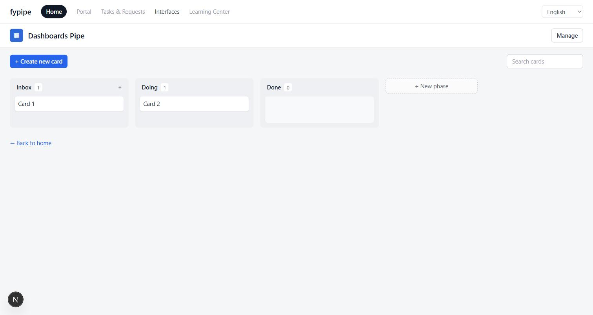
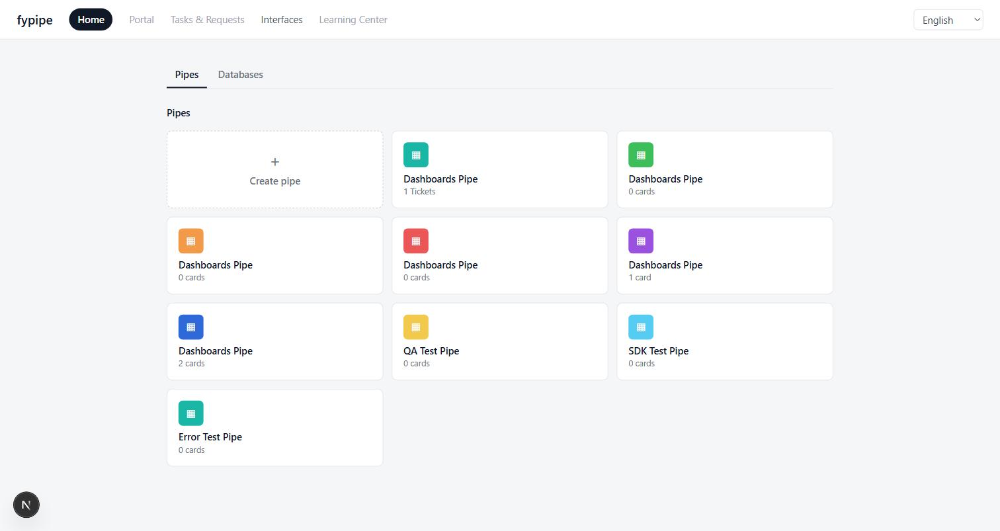
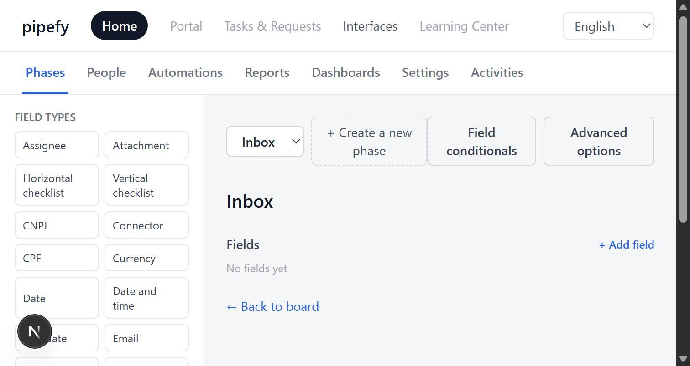
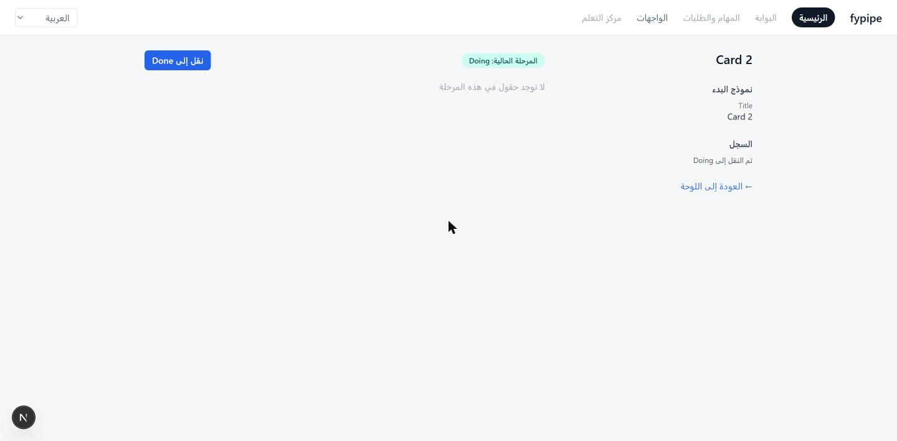

PROOF
09

A WORKING PRODUCT, NOT A MOCK-UP

Pipes + Databases home, served from Postgres

Phase editor — 23 field types, 7 admin areas

10 locales — RTL layout mirrors automatically
Ralph
Built one item per pass, unattended, start to finish
Demo 2026